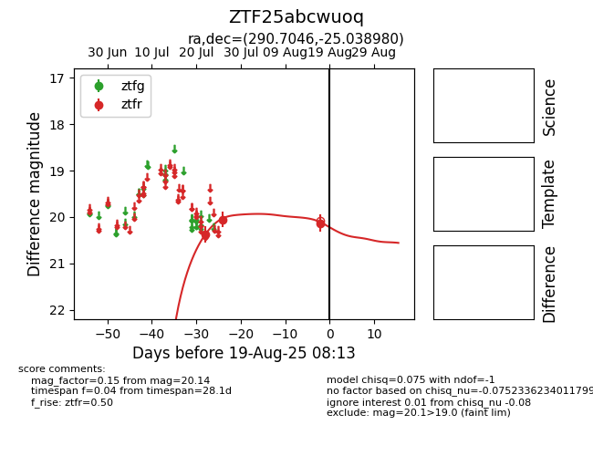

Target ZTF25abcwuoq at 2025-08-19 08:13, see:
FINK: fink-portal.org/ZTF25abcwuoq
Lasair: lasair-ztf.lsst.ac.uk/objects/ZTF25abcwuoq
ALeRCE: alerce.online/object/ZTF25abcwuoq
alt names
ZTF25abcwuoq (ztf,fink)
coordinates:
equatorial (ra, dec) = (290.7046,-25.03898)
galactic (l, b) = (13.2932,-17.64100)
photometry
last ztfr=20.14
3 ztfr detections
